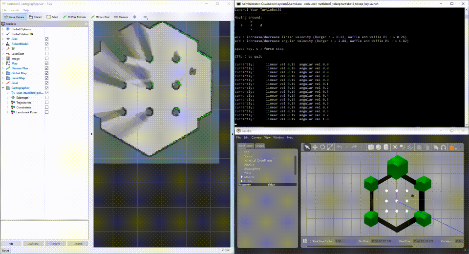

TurtleBot3
Getting Started with the TurtleBot3 running Windows. The ROS for Ubuntu documentation is located at the Robotis website. The documentation on this page will describe the differences between Ubuntu and Windows.
Windows Requirements
Windows Software
The TurtleBot3 uses a Lidar which requires the following driver.
Guide
General notes
The TurtleBot3 documentation uses the unix command 'export' to set environment variables, instead use the following:
set TURTLEBOT3_MODEL=waffle
NOTE: The value of %TURTLEBOT3_MODEL% is case-sensitive.
Please use turtlebot3_bringup-win.launch which has Windows device bindings.
Setup
PC Setup
Please follow the instructions for setting up your computer with ROS on Windows.
SBC Setup
You can bypass this section
OpenCR Setup
Please follow the Windows instructions for the Robotis OpenCR board in the Robotis Manual.
Before proceeding, make sure the motors turn by pressing the motor test buttons near the USB connector.
Compatible devices
ROS on Windows requires a x64 bit Windows 10 Desktop or Windows 10 IoT Enterprise, and compatible hardware.
ROS on Windows was brought up using Up2 and an Intel Nuc.
Create a new workspace
In a Command Window set up with the ROS environment, create a directory for your robot workspaces and a workspace for TurtleBot3.
mkdir c:\ws\turtlebot3\src
cd c:\ws\turtlebot3\src
catkin_init_workspace
git clone -b melodic-devel https://github.com/ROBOTIS-GIT/turtlebot3_msgs
git clone -b melodic-devel https://github.com/ms-iot/turtlebot3_simulations
git clone -b melodic-devel https://github.com/ms-iot/turtlebot3.git
git clone -b melodic-devel https://github.com/ms-iot/hls_lfcd_lds_driver
cd c:\ws\turtlebot3
rosdep update
rosdep install --from-paths src --ignore-src -r -y
Customize TurtleBot3 Launch Files
Modify the ROS Launch files to map the devices to the correct COM port. To determine which COM ports you require, right click on the Windows Start Menu, Select Device Manager.
Under the Ports (COM & LPT) node:
USB Serial Device (COMx)is the OpenCR board.Silicon Labs CP210x USB to UART Bridge (COMy)is the Lidar.
Enter the COM port in the correct fields in the launch files below:
turtlebot3_bringup/launch/turtlebot3_core-win.launch
<node pkg="rosserial_python" type="serial_node.py" name="turtlebot3_core" output="screen">
<param name="port" value="COMx"/>
turtlebot3_bringup/launch/turtlebot3_lidar-win.launch
<node pkg="hls_lfcd_lds_driver" type="hlds_laser_publisher" name="turtlebot3_lds" output="screen">
<param name="port" value="COMy"/>
Build Nodes
To build the TurtleBot3 packages, enter the TurtleBot3 workspace and build using the catkin build system.
:: make sure all required binaries installed.
choco upgrade ros-melodic-desktop_full -y
:: build TurtleBot3 workspace.
cd c:\ws\turtlebot3
catkin_make
Now inform ROS where to find your TurtleBot code by merging the TurtleBot3 install environment with the ROS environment. Please ensure you do this every time you open a command window.
c:\ws\turtlebot3\devel\setup.bat
If you forget to merge the TurtleBot3 environment by calling the setup batch file, you'll get an error such as this:
RLException: [turtlebot3_robot.launch] is neither a launch file in package [turtlebot3_bringup] nor is [turtlebot3_bringup] a launch file name
Running TurtleBot
No Robot - No Problem!
rViz is tool which allows you to visualize a representation of a robot, and project fake data in order to exerise or develop logic. The TurtleBot3 simulation is in the turtlebot3_simulations package.
To start the simulation, open one elevated command prompt:
c:\opt\ros\melodic\x64\setup.bat
c:\ws\turtlebot3\devel\setup.bat
set TURTLEBOT3_MODEL=waffle
roslaunch turtlebot3_fake turtlebot3_fake.launch
Then, open another elevated command prompt:
c:\opt\ros\melodic\x64\setup.bat
c:\ws\turtlebot3\devel\setup.bat
set TURTLEBOT3_MODEL=waffle
roslaunch turtlebot3_gazebo turtlebot3_simulation.launch
Now you should see TurtleBot3 random walking on RViz. You can create your own logic which reads /odom or publish /cmd_vel to move the virtual robot.
Let's try out something more!
SLAM (Simultaneous localization and mapping) is a very popular application in the mobile robots, and with the simulator - Gazebo, you can exercise this technology on your Windows desktop, even without a real robot.
To start this demo, open an evelated command prompt:
:: make sure all required binaries installed.
choco upgrade ros-melodic-desktop_full -y
choco upgrade ros-melodic-cartographer_ros -y
:: run the demo.
c:\opt\ros\melodic\x64\setup.bat
c:\ws\turtlebot3\devel\setup.bat
set TURTLEBOT3_MODEL=waffle
roslaunch turtlebot3_gazebo turtlebot3_gazebo_cartographer_demo.launch
After a few moments, you will see Gazebo running a simulated world with your simulated TurtleBot3, RViz running the mapping progress, and a simulation node to drive the TurtleBot3 random walking.

Run TurtleBot3 with Sensors connected to your development machine.
If you have TurtleBot3 hardware, you can plug the sensors directly into your development machine to iterate on fuctionality with your development machine. Perform the steps to set up the launch file for your development system.
In one command window, start roscore.
In another command window, launch the TurtleBot robot code.
roslaunch turtlebot3_bringup turtlebot3_robot-win.launch